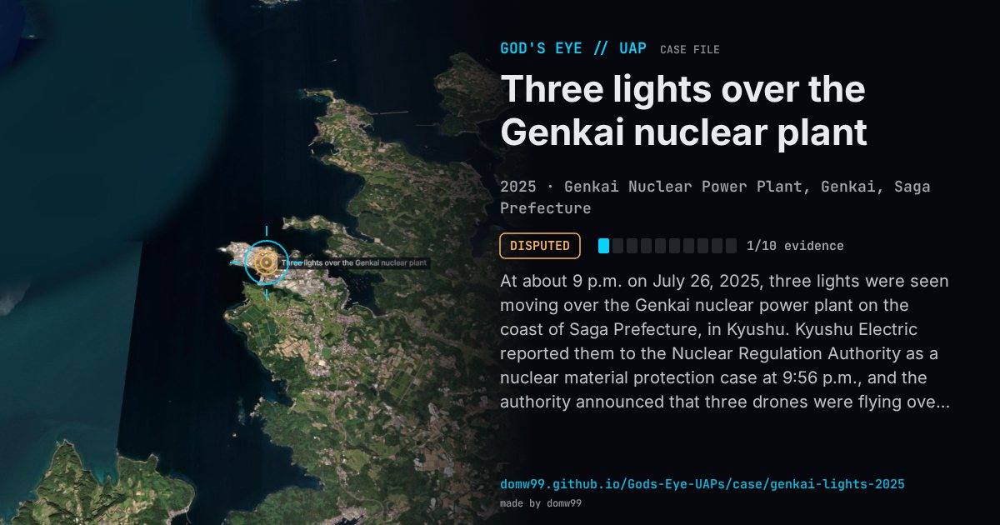

Three lights over the Genkai nuclear plant

At about 9 p.m. on July 26, 2025, three lights were seen moving over the Genkai nuclear power plant on the coast of Saga Prefecture, in Kyushu. Kyushu Electric reported them to the Nuclear Regulation Authority as a nuclear material protection case at 9:56 p.m., and the authority announced that three drones were flying over the site, a statement it later corrected to “three lights”. No damage or change in radiation was found and police found no drones. According to a map Kyodo News later obtained, the lights were first seen near the main-gate security office, circling clockwise in an ellipse about a kilometre long and passing some 50 metres from the two reactors being decommissioned.
Explanation
In September 2025 the head of the Saga prefectural police told the prefectural assembly that interviews and nearby security-camera footage suggested the lights were “highly likely” to have been aircraft, though drones could not be completely ruled out. No drone was found or recovered, no photograph was published, and the Nuclear Regulation Authority withdrew its first statement that three drones had flown over the plant.
What was seen
Shape: Three lights, moving separately
Witnesses: Staff at the plant, according to the operator’s report
Duration: From about 21:00; gone by 00:30, according to NHK
Sources
- AFP via Arab News Japan — Three drones detected in Japan nuclear plant (July 27, 2025)
- Fukuoka Now — Drone-like objects spotted over Genkai nuclear plant (July 29, 2025)
- Metabunk — “Drones” over Japanese nuclear plant… or planes? (with the Kyodo reports)